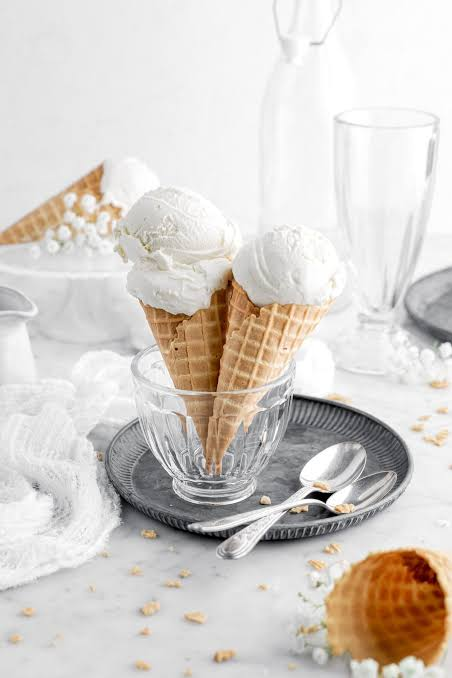

Vanilla Ice Cream
Dessert · Creamy no-churn ice cream with just four ingredients
Your photo goes here
(save it as images/vanilla-ice-cream.jpg)
(save it as images/vanilla-ice-cream.jpg)

Ingredients checklist
0 of 0 ingredients ready
You have everything. Time to make it!
Instructions
- Chill a large mixing bowl and the whisk or beaters in the freezer for 15 minutes.
- Pour the cold cream into the bowl and whip until stiff peaks form.
- In another bowl, stir together the condensed milk, vanilla and salt.
- Gently fold the condensed milk mixture into the whipped cream until just combined. Do not overmix, or the ice cream will be dense.
- Pour into a loaf pan or freezer-safe container, smooth the top and cover tightly.
- Freeze for at least 6 hours or overnight until firm.
- Let it stand for 5 minutes before scooping.